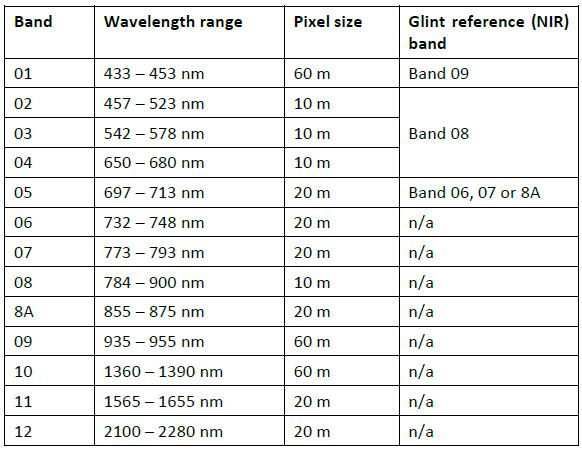
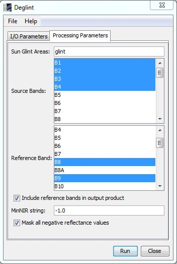

| Deglint Algorithm Specification | |
The purpose of the glint correction or "deglint" is to remove the contribution of the direct reflectance from the top of the air-water interface from the imagery. Such photons have never penetrated the water surface and do not carry spectral information about subsurface features. Dependent on conditions and pixel size glint can manifest as sheen on the surface or as bright lines co-incident with waves.

The deglint algorithm described here is based on Hedley at al. (2005) and other very similar methods described in Kay et al. (2008). The algorithm is entirely image-based, bands in visible wavelengths are corrected one at a time by reference to another band which is in the NIR (near infra-red) or SWIR (short wave infra-red). It is assumed that the NIR reference band only contains the glint (because water is opaque in the NIR) and so the contribution of the glint in the visible band can be estimated by the brightness in the NIR band, by a simple linear relationship. To establish the relationship a linear regression between the two bands is performed over a deep water area, where the contribution from below the water surface is assumed homogenous, and so the derived relationship is only based on the surface reflectance. It is required to specify the minimum expected NIR value in the absence of glint, denoted MinNIR. This can be taken as the minimum value over the sample area (default) or physically set as a number (optional).

A step by step outline of the procedure is:
An important point, of specific relevance to Sentinel 2, is that the band to be corrected and the NIR reference must be of the same spatial resolution, and have close spatial and temporal alignment. The algorithm assumes that each pixel images exactly the same water surface feature in the two bands, if the bands are not in exact spatial alignment, the regression will be poor and correction will not work well. Similarly if due to integration time requirements the bands are not imaged coincidentally since the sea surface is in motion the correction may not work well. While these issues could be investigated from a theoretical analysis of the instrument design, trial and error is the most practical method for achieving optimal results.
The following table lists the Sentinel 2 MSI bands and indicates which bands can be used as NIR references for correction of bands 1 to 5. Bands from 6 onwards (773 nm) are not corrected because they are not useful for subsurface mapping as these wavelengths do not penetrate into the water.

The deglint algorithm has been implemented into SNAP with the following features:
| Parameter | Description |
|---|---|
| sunGlintVector | The sample area/s of the image displaying a range of sun glint. This parameters must be the name of a vector data contained in the source product. If the source product does not contain this kind of data, the user should create it previously by creating a new vector data container and adding some areas by using the available tools (Rectangle, Polygon or Ellipse drawing tools) |
| sourceBandNames | The bands to be corrected. The user can select one or more bands. |
| referenceBands | The NIR band to be used as reference. It should have the same raster size than the source bands selected. If the source bands have different raster sizes, it should be selected at least one reference band per each raster size. If they are selected two or more reference bands with the same raster size, only the first of them will be used for the correction. |
| includeReferences | If this option is selected, besides the corrected bands, the bands used as reference will be included in the output product. |
| minNIRString | If the user sets an only value, this value will be used for all reference bands selected. It is possible to use individual values for each reference band by separating them by ';'. If the value is negative, then the minimum in the NIR band over the sample area will be used. |
| maskNegativeValues | If this option is selected, the negative reflectance values generated during the correction will be set to NoDataValue. |
The parameters described above can be set through the graphical user interface designed in the SNAP Desktop component:
